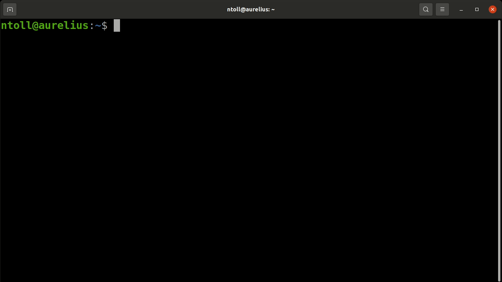
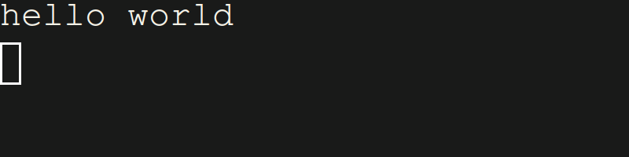
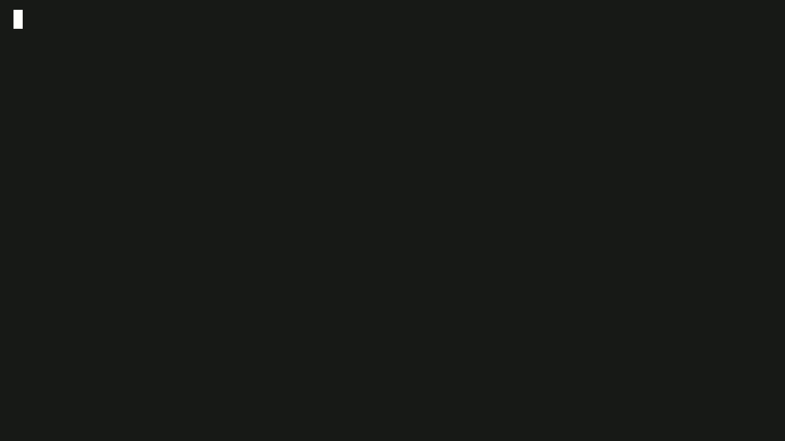

Terminal
In conventional (non-browser based) Python, it is common to run scripts from
the terminal, or to interact directly with the Python interpreter via the
REPL.
It's to the terminal that print writes characters (via stdout), and it's
from the terminal that the input reads characters (via stdin).
It usually looks something like this:

Because of the historic importance of the use of a terminal, PyScript makes one
available in the browser (based upon XTerm.js).
As mentioned earlier, PyScript's built-in terminal is
activated with the terminal flag when using the <script>, <py-script> or
<mpy-script> tags.
Success
As of the 2024.4.1 release, MicroPython works with the terminal.
This is, perhaps, the simplest use case that allows data to be emitted to a read-only terminal:
The end result will look like this (the rectangular box indicates the current position of the cursor):

Should you need an interactive terminal, for example because you use the
input statement that requires the user to type things into the terminal, you
must ensure your code is run on a worker:
<script type="py" terminal worker>
name = input("What is your name? ")
print(f"Hello, {name}")
</script>
To use the interactive Python REPL in the terminal, use Python's code module like this:
The end result should look something like this:

Finally, it is possible to dynamically pass Python code into the terminal. The trick is to get a reference to the terminal created by PyScript. Thankfully, this is very easy.
Consider this fragment:
Get a reference to the element, and just call the process method on
that object:
XTerm reference
Each terminal has a reference to the Terminal instance used to bootstrap the current terminal.
On the JavaScript side, it's a script.terminal property while on the Python
side, it's a __terminal__ special reference that guarantees to provide the
very same script.terminal:
<script id="py-terminal" type="py" terminal worker>
from pyscript import document, ffi
# example: change default font-family
__terminal__.options = ffi.to_js({"fontFamily": "cursive"})
script = document.getElementById("py-terminal")
print(script.terminal == __terminal__)
# prints True with the defined font
</script>
Clear the terminal
It's very simple to clear a PyTerminal:
<script type="mpy" terminal worker>
print("before")
__terminal__.clear()
print("after")
# only "after" is on the terminal
</script>
Terminal colors
Colors and most special characters work so you can make the text bold or
turn it green. You could even use a control
character to print('\033[2J') and clear the terminal, instead of using the
exposed clear() method:
<script type="mpy" terminal worker>
print("This is \033[1mbold\033[0m")
print("This is \033[32mgreen\033[0m")
print("This is \033[1m\033[35mbold and purple\033[0m")
</script>
Terminal addons
It's possible use XTerm.js addons:
<py-config>
[js_modules.main]
"https://cdn.jsdelivr.net/npm/@xterm/addon-web-links/+esm" = "weblinks"
</py-config>
<script type="py" terminal>
from pyscript import js_modules
addon = js_modules.weblinks.WebLinksAddon.new()
__terminal__.loadAddon(addon)
print("Check out https://pyscript.net/")
</script>
By default we enable the WebLinksAddon addon (so URLs displayed in the
terminal automatically become links). Behind the scenes is the example code
shown above, and this approach will work for
any other addon you
may wish to use.
MicroPython
MicroPython has a very complete REPL already built into it.
- All
Ctrl+Xstrokes are handled, including paste mode and kill switches. - History works out of the box. Access this via the up and down arrows to view your command history.
- Tab completion works like a charm. Use the
tabkey to see available variables or objects inglobals. - Copy and paste is much improved. This is true for a single terminal entry, or a paste mode enabled variant.
As a bonus, the MicroPython terminal works on both the main thread and in web workers, with the following caveats:
- Main thread:
- Calls to the blocking
inputfunction are delegated to the native browser based prompt utility. - There are no guards against blocking code (e.g.
while True:loops). Such blocking code could freeze your page.
- Calls to the blocking
- Web worker:
- Conventional support for the
inputfunction, without blocking the main thread. - Blocking code (e.g.
while True:loops) does not block the main thread and your page will remain responsive.
- Conventional support for the
We encourage the usage of worker attribute to bootstrap a MicroPython
terminal. But now you have an option to run the terminal in the main thread.
Just remember not to block!